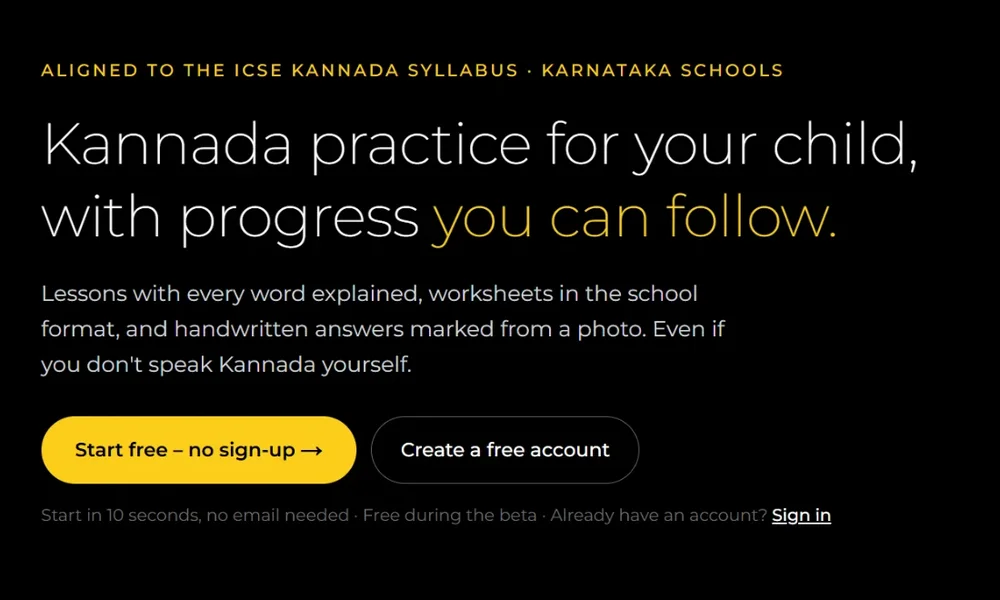

I turn messy, human problems into AI products people trust.
Twenty years across investment banking, cloud finance and engineering platforms. Today I lead an enterprise knowledge platform, and in my own time I build AI products end to end.
Featured
What I’m working on nowAn engineering organisation’s memory is everywhere except where you need it
I lead a platform that turns scattered engineering knowledge into shared, reusable context for people and AI agents.
An AI that gathers the evidence, and leaves the judgement to the manager
An agentic RAG design that halves the effort of year-end reviews, specified as carefully for what it refuses to do.
All stories
9 projectsI built my own AI workbench to see what the models see
Claude and Gemini side by side, grounded in my documents, emails and live search, with every piece of context visible.
Teaching India’s grandparents to spot a scam before it spots them
Calm, daily scam-safety lessons for senior citizens, built on official government guidance.

Live betaWhen the homework is in a language the parents can’t read
From the school chapter to a marked, handwritten exam paper, with no tutor and no sign-up.
A study app that refuses to teach, and grows a creature instead
The coach and game layer around a child’s own books, where reward depends on evidence of thinking.
My hypothesis was wrong. The research found a better problem.
A fashion-returns annoyance turned out to hide a quieter cost: shoppers stop trying new brands.
Making cloud spend visible to the people who spend it
Building a multi-cloud FinOps function from scratch: chargeback, champions, and a 200-strong community.
Listening to an engineering platform’s users at scale
An automated feedback heatmap that turns scattered user requests into a ranked view for discovery and prioritisation.
How I work
Four habits behind every storyResearch hard, build early, and be honest about the limits.
I start with people, not features.
Every story here began with interviews: seniors, parents, shoppers and managers. The brief usually changes once I’ve listened.
I build to learn.
Claude Code, Lovable, Supabase and Vercel let me ship working products, so decisions rest on something real rather than a slide.
I design the “no” as carefully as the “yes”.
Colleague Assist never rates. Level-Up Lab never teaches. Sathi never claims to detect scams. Limits are where trust comes from.
I say what isn’t proven.
Pilot numbers come with their limits attached. A roadmap is a promise, not a claim.
Problems I’d love to solve next
If you’re working on one of these, let’s talkWhere I want to spend the next five years.
- Knowledge that walks out of the doorDecisions, context and know-how scattered across tools and people, so every team keeps rediscovering what the last one knew.
- AI for high-stakes, human decisionsReviews, money and safety: places where AI must be grounded, auditable and clear about what it won’t do.
- Technology for people it usually forgetsSenior citizens, parents learning alongside their children, kids building habits. Products that respect them, not just target them.
- Making the cost of technology visibleHelping the people who spend on cloud and AI see what it costs and what it returns.
By the numbers
Value added so farLet’s build something people trust.
Open to conversations about AI product roles, platform strategy and interesting problems. The quickest way to reach me is email.